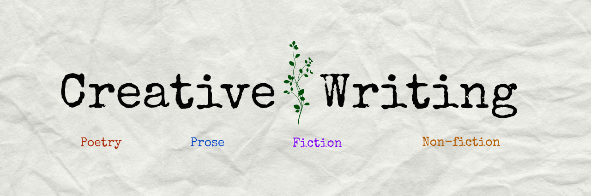

A few things that make me happy.
The scientific study of matter, its fundamental constituents, its motion and behavior through space and time, and the related entities of energy and force.
According to Wikipedia
Any writing that goes beyond the boundaries of normal professional, journalistic, academic, or technical forms of literature.
According to Wikipedia
Thanks for being interested in my interests!